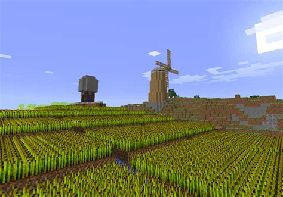
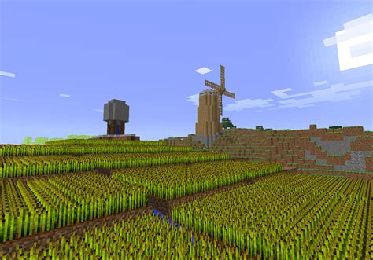

Minecraft is a fun sandbox game that has been played and loved by people of all ages. It is a lot of fun to play it but recently, it experienced a decline in players due to other very popular games like Roblox and Fortnite. We need the Minecraft players to come back!
There are a bunch of reasons you should play Minecraft. First, there are infinite possibilities of what you can do in the game because of its open world sandbox nature. You can build houses, cities, spaceships, and anything that you imagine. You can do even more when you install mods into Minecraft.